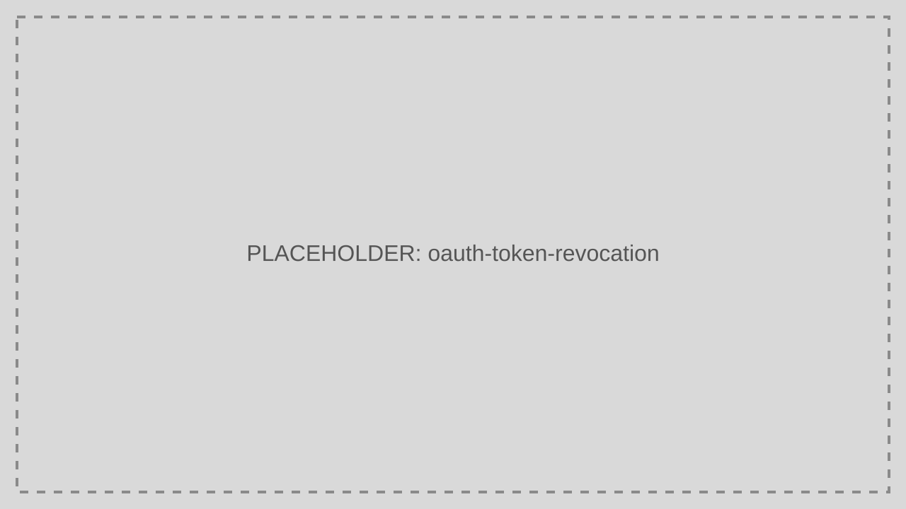

Token Revocation
Revoke a Refresh Token when a session must be terminated or a credential is suspected to be compromised.
Audience: Developers, CTOs
Read this guide when you need to invalidate refresh capability before token expiry.
Prerequisites
- The Refresh Token value to revoke
- A reason code or operator note for auditability

Step-by-Step Sequence
- The operator or client identifies a Refresh Token to revoke.
- The caller sends the token to
/revoke. - TokenIDP records the revocation event.
- Future refresh attempts using that token fail.
Working Example
Example Request
curl -X DELETE https://localhost:5001/revoke \
-H "Content-Type: application/json" \
-d '{
"token": "35b31ab0-53a1-4566-b2ff-4460c70d9ad3",
"reasonRevoked": "user_sign_out"
}'Example Response
{
"message": "Refresh token revoked."
}When to Use
- User sign-out from sensitive devices
- Compromise response
- Administrative session termination
When Not to Use
- Routine Access Token expiry handling
- JWT validation in APIs that only need signature and scope checks
Security Notes
- Revoke the token as soon as compromise is suspected.
- Keep audit details for who triggered the revocation and why.
- Combine revocation with logout and client-side token cleanup.
Common Pitfalls
- Assuming revoking a Refresh Token instantly kills every Access Token already issued.
- Not storing the revocation reason, which weakens audit quality.
Troubleshooting Tips
- If the user still reaches APIs, check whether they are using a still-valid Access Token rather than a revoked Refresh Token.
- If revocation appears ineffective, verify the client is not holding a newer rotated Refresh Token.